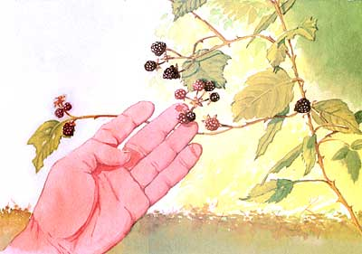
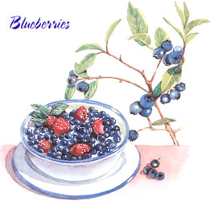
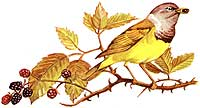
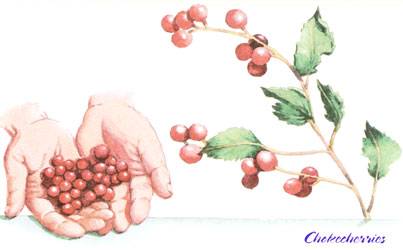
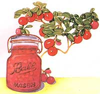

Long before our home plantings even begin to flower in June, mouthwatering berries of all kinds arrive (at world class prices) in the fancy-food departments of supermarkets, first from Chile, then from Central America and Mexico, and, finally, from warmer areas of North America - raspberries from California and blueberries from Georgia. As with most mass-produced produce, these berries capably fill the stomachs of those who have but a fleeting memory of a backyard raspberry bush, but they are only a moon-cast shadow of what may be the most delicious food in the world.
One or another fruiting plant grows practically everywhere in North America. Indeed, the greatest variety of berries are found on low bushes and ground creepers native to our most hostile climate: snow country of the U.S./Canadian borderlands and up into the Great White North. Till you prospect the country, you'll never know how climate, topography and soil chemistry combine to determine the berry species that will grow there. When you do, make it an expedition of discovery.
And think like a raspberry. A berry's only role in nature is to peddle seeds that the parent plant wants distributed as far afield as possible. The preferred customers of most berry species are farflying birds. That's why a plant surrounds its fruit with thorns intended to fend off slowpokes such as you, me, wild pigs and bears. It grows best in full sun. If its roots are in the shade, it will extend long, flowering branches, canes or the stolons used by ground-berries as far out into the sun as possible.
Trees and berry bushes sprout everywhere birds drop seed, but most thrive only in the sun. You'll often find berry bramble canes at road and field edges or at meadow margins. In spring, where brush has grown up all around parent brambleberry plants you'll spot white-flower-garlanded canes arching up and over adjoining plants to seek the sun. There, bees will find the flowers and birds will spy the bright berries when they are ripe.
Think like a bluejay. Look from ground level up to eye level and at all low trees. Many common berries grow in both bush and creeper forms. Creeper berries are underfoot, often extended above the greenery on long stems. Fruiting trees are low-growers that attract high-flyers like jays along with low-flying ground birds such as warblers that migrate through the underbrush.
Search in natural meadows, at river and pond margins, overgrown farm fields or recent burns, along country roads and lanes, and under power line rights-of-way. Some berries grow in marshes, others in sandy barrens. The guides recommend "disturbed ground" or places where man has removed trees and undergrowth, then abandoned the land, providing several decades of sunny ground for fast-growing berry bushes and small fruiting trees to colonize, before forest trees grow up to shade them out.
Till you are well-experienced, avoid all vine fruit save for wild grapes that grow up into the trees, fruit in clusters like store grapes, have twisty tendrils on their stems and leaves with serrated edges and a heart-shaped base. The fruit are dark blue or red and have a sweet outer skin that slips off easily from the glutinous, sour inner seed envelope. Seeds number one to three and are hard. In the North, they taste like Concord grape jelly or Manishewitz, in the South, like Muscatel wine. Young shoots and leaves are edible.
Most other wild vine fruit are poisonous or hard to differentiate from look-alikes that are. The fruit of Smilax genus, misnamed carrion flower in the North and greenbrier (bullbrier) in the South, grow on vines that produce small clumps of edible black or blue-black berries. They are never abundant (I can show you but a single vine hereabouts), and can be confused with the fruit of the Virginia creeper, which puts out a spray of small, blue, appetizing looking (and marginally palatable but toxic) berries. Uncommon, but poisonous, Canada moonseed looks like grapes but has large (up to ten-inch) round, smooth edged leaves, bitter fruit and crescent shaped seeds. Poison ivy, when it climbs a tree to fruit, produces unappetizing, hard white berries, while nightshade's berries are small, orange-red and bitter (its other name is "bittersweet"). Both are toxic in one way or another.
Summer is best, though some berries fruit in spring and others in fall. Many even hold on till winter, with some, such as Hawthorn's mini-apples, improving in sweetness and flavor after frost. Following is a list of the most common berries of midwestern and eastern North America. But first . . .
Three warnings before your trip out:
1. Make a positive identification before you pick or eat any berry. Obtain, study and use a reliable, up-to-date field guide. (See "Sources" at the end of this article). If possible, make your first trips with a long-time berry-picker from your local area; field experience is by far the best teacher.
2. You'll want to avoid areas that have been sprayed recently with herbicide. Most spraying is done early in the growing season when plants are making fastest growth and are most vulnerable. Dead vegetation is an indication of a recent spraying. If vegetation in an even ribbon along the roadside or under the highlines looks to be growing, but is stunted, unevenly leafing out or well behind similar plants growing elsewhere, you have an old spray zone that is fighting back. Any fruit will have grown on canes or buds produced after the spray lost strength. But still, I'd leave it and come back next year.
3. Make a lot of racket in the berry patch. Bears like berries, too, but will instinctively move away if they sense humans approaching. You learned this from birth if you're from grizzly country in Alaska or the Yukon. But contrary to common (mis)knowledge, the common black bear of the lower 48 and Canada can also pose a danger to people. Don't surprise them.
Blueberries
Appearance: Red to purple-black, round to oval, seedy aggregate fruits measuring a half inch to an inch; variably sweet to sour, juicy to dried-out, depending on species, rainfall and age. Hundreds of species; all edible. Longish, dark purple blackberries pull off a stem, rounder raspberries slip off a half-round cap. Bush varieties grow on long, thorny canes that sprout from perennial roots and live only one fruiting season. Dead canes persist for years, creating bramble patches that no berry-fancier but a rabbit could love. Low growing blackberries, called dewberries, fruit on low creepers with short thorns that can't resist snagging your jeans or socks.
Mourning Warbler with Wild Blackberries
Location: East and Northwest. Dry, open ground, sunny meadows, road and field margins, "disturbed ground." Some varieties enjoy sandy soil. Blackberries grow farther south than raspberries.
Season: Profusion of white to pink, open-petaled flowers bloom in spring, fruit appears summer to fall. Blackberries arrive two weeks later than raspberries.
Warnings: None. No aggregate berry (those, like raspberries, that are made up of clusters of juicy little drupelets) is poisonous to man or beast.
Blueberries, Huckleberries
Appearance: Highbush variety grows on six-to 20-foot, woody-stemmed, evenly rounded bushes. Lowbush variety grows on dense creepers along the ground and up to two-feet high. Displays downhanging, white, bell-shaped flowers in spring; in summer, sprouts sprays of familiar round, blue fruits, not shiny, often dusted with white powder, with five small blue petal-like calyx lobes at the blossom end.
Location: Blueberries need an acid soil. They do well in bogs and barrens with leached-out sand or peat soil. Dried up beaver ponds (flat spots in rolling hill country) are good. Oak trees can indicate good blueberry land.
Season: Flowers in spring, berries in summer.
Warnings: The arguably toxic (the books don't agree) pokeweed berry has a roughly similar appearance to blueberries, but grows thinly on a rough shrub with long leaves and red stems. Unappetizing (they just look poisonous), glossy, single-drupe berries are dark red-purple, scalloped around margins and wider than deep. They come larger, same size or smaller than a blueberry, with or without a short stem per berry, and grow lined up close together around the end of a thin branch. Mature root, seeds and rind of the stem are highly toxic.
Emerging poke shoots are widely eaten like asparagus or forced like Belgian endive, though red ends of the shoots are cut off. The berries are all purple-red, and Foxfire 2 (wisdom of state-of-Georgia elders) warns against them. I don't know any old-timers who'll eat them, though the berries do figure in more than one folk remedy.
Fruit of buckthorns resemble blueberries, but are blacker and bitter and cluster along branches of a shrub. Some have thorns.
Elderberries
Appearance: Flowers bloom in a six-inch or so diameter spray of dozens of white blossoms (called "elderblow," they are delicious dipped in a light egg batter and fried in butter to make fritters), followed by a multitude of small dark red-purple berries in summer. Wait till berries are ripe and juicy. Toxic to some people when eaten raw, with a strong sweet-bitter flavor, they cook up into a grand juice for jelly, flavor for apple wine, cordials or syrup. Mix juice with an equal part sugar and some lemon juice to counter the bitter, cook till bubbly and pressure-can in pint jars for syrup to go on pancakes or ice cream. Once when I was little, my Great Aunt Elsa served fresh-picked, egg-batter-fried elderblow with elderberry syrup for breakfast to the whole family (we'd gone out to the old farm for strawberry time in June). I was too young to appreciate the weedy appearance of the blossoms or the bitter principle of the syrup, so I settled for fritter-batter pancakes with fresh strawberries; I've been kicking myself ever since.
Location: Elderberries need a rich forest soil and are found in moist woodlands, at margins of fields and along trails and forest roads.
Season: Flowers bloom June to July, fruits appear late Summer into fall.
Warnings: See blueberry warning.
Wild Cherries: Black Cherry And (Red) Chokecherry
Appearance: Small (quarter-inch) round, red or blue-black berries in sprays on low trees. Young trees of dark-fruited black cherry have a shiny, reddish bark with shallow pits. Snapped twigs have the characteristic "wild cherry" odor. Fruits are small, juicy, round cherries born along lengthy stems at ends of branches. Chokecherry fruit grows similarly but is bright red to purple. It is bitter or sour or both, but palatable as a trail refresher and can add a wild flavor to apple jelly or wine. Native Americans dried and used them in pemmican and other winter foods and trail mixes.
Of the Prunus genus and related to plums, cherry trees have the characteristic fruit tree leaf: ovoid, small, with many blunt teeth around margin. It's easy to confuse chokecherries with small red bushberries, which is OK. As a rule of thumb, if a bright red, juicy berry growing in quantity on a wild bush or tree tastes good (even if it's a little sour), it is edible. If it is too sour, spit it out. But, as with any wild food, be sure to ID it from a book before eating in any quantity.
Location: Wild cherries grow rapidly from bird-dropped seeds, quickly colonizing clearings, and are common weed trees of "disturbed land" throughout the East and upper Midwest.
Season: Cherry blossoms bloom in spring; fruit grows in summer and often holds on the tree till fall.
Warnings: Wilted leaves and egg-shaped seeds of both red and black cherries contain poisonous hydrocyanic acid. Don't swallow the seeds! Only toxic look-alike is uncommon and inedibly bitter.
Similar Fruit: Highbush cranberry (not a cranberry at all), nannyberry, squawberry and other fruit of northern woods and marshes look like wild cherries (and sometimes are called so locally). Use a field guide to differentiate. Also taste test: If bitter, don't eat them.
Cranberries
Appearance: One of only three fruits native to North America (the blueberry and Concord grape being the other two), this round, red fruit with many small, soft seeds looks the same in the wild as in your grocery store. So prized was the cranberry by our forefathers that in 1677, the colonists sent ten barrels of the fruit to England to placate King Charles II, after they'd had the nerve to mint their own shillings. Tart, hard and virtually inedible until cooked, cranberries grow on low trailing shrubs or creepers.
Location: Acid soils and bogs of upper Northeast; mountain cranberry found in similar areas all across far North.
Season: Ripens in fall, often stays on plant over winter.
Warnings: None.
Serviceberries (Juneberries)
Appearance: The red or downy serviceberry of the East and the blue or Saskatoon serviceberry of the Northwest are both dark red to purple, three-tenths of-an-inch-sized fruits with small blossomed calyx lobes that look like oversized blueberries. Serviceberries have noticeable seeds and grow in clusters at ends of twigs. Some species are sweet and juicy; others taste better cooked. Native Americans dried them for pemmican.
Location: Serviceberries grow on small to 20-foot trees that like well-watered ground, often beside streams.
Season: Showy white to pink flowers appear in spring; fruit ripen mid-to late-summer.
Warnings: None.
Appearance: The wild strawberry is a tiny version of the domesticated varieties (it is of the same species, Fragraia), though it can be sweeter and more fragrant than garden varieties if sun and rain have been good. Leaves have three leaflets with serrated edges and are dull, not shiny like three-leaved poison ivy. The fruit is often raised up to the sun on longish stems.
Location: Fields and meadows everywhere that birds drop seed. Uncommon wood strawberry likes shade and is larger than common variety and not as tasty.
Season: Small flowers with yellow centers and five white petals appear in early spring; fruit ripens from green to white to pink to red in June.
Warnings: None. Wild strawberries have no nasty look-alikes and are never toxic.
Low Berries Of the Northern Woodlands
Appearance: These red, blue, yellow or white, nutritious but mostly blah flavored berries grow low to the ground in the woods of the North country. Bunchberries are a red stone fruit, borne in a cluster atop a whorl of six leaves. Easy to pick, but hard to separate tasteless pulp from seed. Cloudberry, found from the Arctic to New England, grows much the same as red bunchberry but with yellow fruit. Wintergreen or checkerberry of eastern and midwestern north woods ripens in fall and improves with freezing. A relative, creeping snowberry, is white, oval and grows on stems covered with tiny evergreen leaves. Bearberries of the Rockies and North are red and mealy, with colorful leaves used as a ceremonial tobacco by Native Peoples.
Location: All across the U.S. Canadian border, throughout inland Maine and north.
Season: Most ripen in fall; many persist into winter.
Warnings: Many species; a field guide is essential to identify absolutely. But no toxic look-alikes.
Evergreens, Junipers and Yew
Appearance: Red or blue berries growing along branches of evergreen (needled) trees or shrubs. American yew produces attractive, three-eighths-inch, urn-shaped red fruit with a sweet pulp and poison seeds. Western junipers produce dusty blue fruit that look like blueberries.
Location: Yew is a common foundation plant that can be spread anywhere. Junipers grow in California and in portions of the mountain West.
Season: Summer to early winter.
Warnings: Though the fruit looks tempting, yew is best avoided except as an emergency food. Never swallow a seed. Juniper berries are never toxic, but some species contain so much resin they are unpalatable. Utah, California and Rocky Mountain junipers are the good ones. A regional field guide will confirm edibility.
Other Wild Berries
Barberry, the common foundation plant is spread by birds and grows wild in many places. Its familiar, downdrooping, hard red fruit is sour but edible when cooked with sugar. Hawthorn trees produce a mini-apple that is sweetened by frost. Wild (seedling) apples escaped from orchards and wild native plums grow everywhere in the woods. On ocean dunes you'll find sea plums, sea grapes, rose hips and other edible berries. Take a field guide wherever you go. And in areas of unusual plant life-deserts, mountains, ocean rims-pick up a local guide so you can feast safely on nature's bounty of berries. They're free for the picking practically anywhere you wander.
Two of the best field guides carry the same name.
Edible Wild Plants, A North American Field Guide (Sterling, 1992) by Eilas and Dykeman. By a pair of Ph.D. botanists, a readable and authoritative guide. Color photos of nearly all plants. A first choice.
Edible Wild Plants (Houghton Mifflin, 1977) by Lee Allen Peterson. By the son of field-guide inventor Roger Tory Peterson, in the familiar field guide format with excellent line drawings by the master and son. A close second choice (though you'd do best to rely on both).
Keep in mind that regional guides are essential for many parts of the continent. Take care to consult them before picking.
Guide to Wild Foods and Useful Plants (Chicago Review Press, 1999) by Mother Earth News contributor Christopher Nyerges. A key to 70 plants common to Southern California from a lifelong survivalist with a flair for the unexpected recipe.
Food Plants of Interior First Peoples (UBC Press, 1997) by Nancy J. Turner. Iron Eyes Cody said of this book, "Every Boy Scout should have a copy." Accompanied by the companion volume covering foods of shore tribes, it makes an informative guide to the myriad wild foods of the upper Pacific Northwest.
Old-Time Know-How from the Deep South (Anchor Press/Doubleday, 1973), Eliot Washington, ed.
Wild berries are abundant in our wild lands and largely ignored by today's suburbanized population. In times of genuine scarcity, rather than a supermarket luxury, berries would become a staple food for those of us who know where the wild ones grow, and when and how to harvest them.
|
 Foraging for wild edible plants can be tons of fun, and you'll be treated with a sweet edible berries as your reward! |
 Wild blueberries taste better than almost any blueberries you can buy at the store. |
 Birds love wild edible berries as much as we do. |
|
 Chockecherries |
 Wild cranberries make excellent preserves. |
|